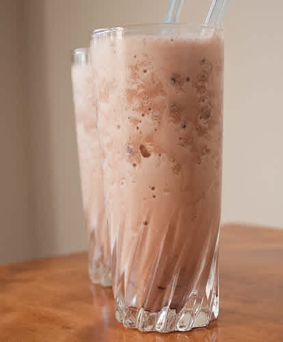

The Power Smoothie!!

This one is a GAME CHANGER!Whether you just need a little pick me up or need to run a full blown marathon, this smoothie will get it done!
Ingredient List
- Protein Powder (any kind will do)
- Goat Milk (fresher the better)
- Ground Beef
- Hot Sauce
- 30 milligrams Cocaine
So how do you make it? Just Follow the easy steps below!
- Take 2 scoops of your favorite protein powder (I like strawberry) and 1 litre of fresh goats milk and add it to blender. Blend till smooth.
- Fry up your ground beef and then add it to the blender as well. You can blend it here but not to much. The smoothie should still need to be chewed afterward.
- Take a clean glass and slightly wet the rim. Then dip the rim into your cocaine to rim the glass.
- Add a little (or a lot) of hot sauce to the bottom of the glass and pour in your blended mixture. I put it at the bottom because I like a big kick at the end!
- That's it! Drink and enjoy!